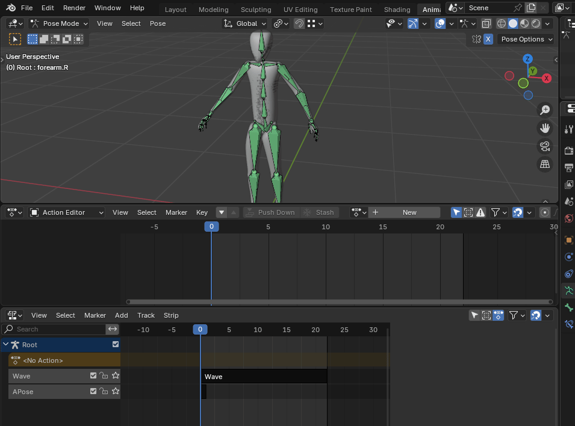
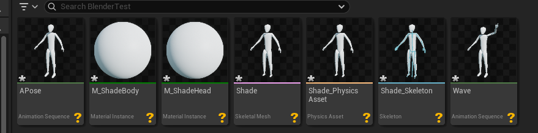
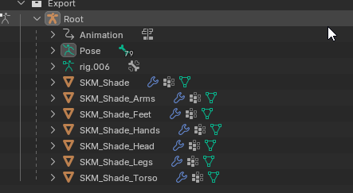
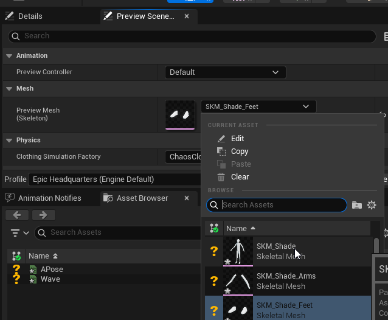
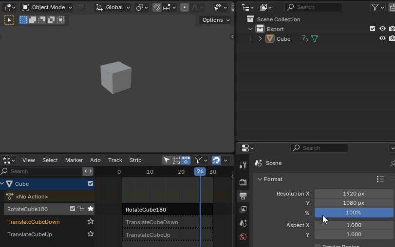
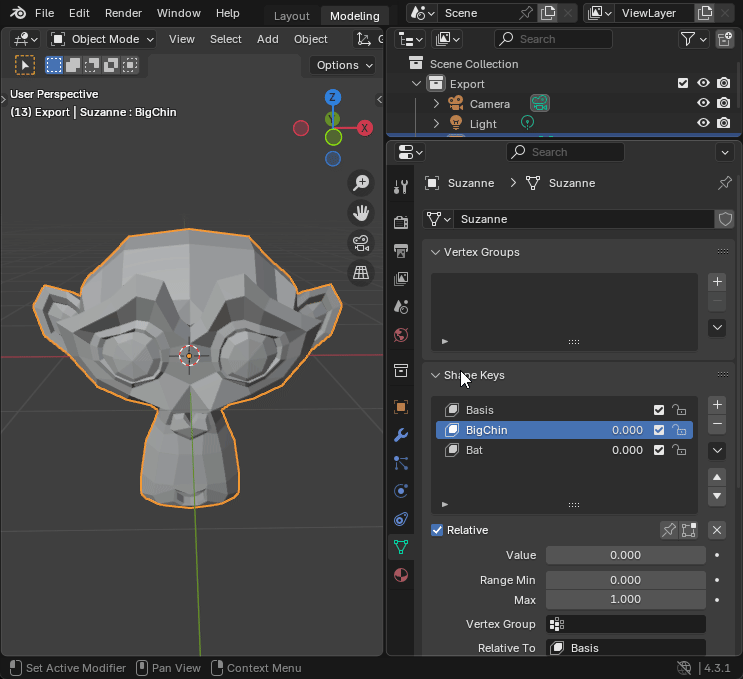
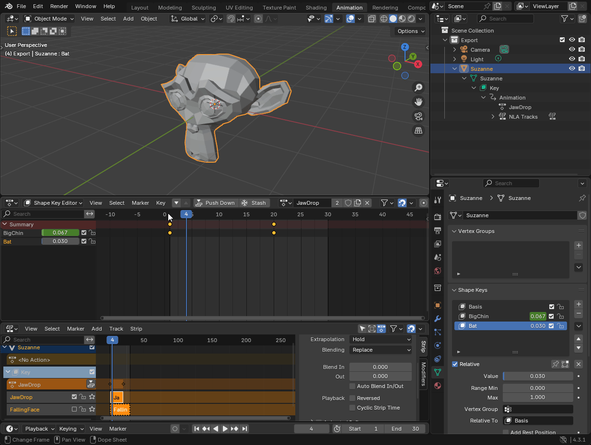
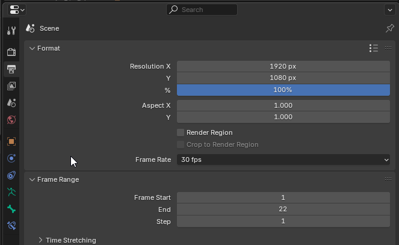

Importing Animations
Blender interchange can import a wide variety of animations authored in blender.
Importing animations requires that your animations are laid out in your blend file with the NLA (non-linear action) editor. Within the NLA each action should be on it's own track which can be done by recording an animation and pushing it down to the NLA track.
Pushing down animations to the NLA is very well explained in this video. It also explains pretty well what the NLA is and how it relates to the different animation editors in blender.
Skeletal Animations
Skeletal animations are owned by the skeleton when imported into unreal. This aligns with blender where you can see the animations clearly laid out under the owning parent rig.
Here you can see the animations laid out in the NLA on a skeletal mesh on blender's side. Each animation is on it's own track. Actions are from the action editor into the NLA to expose them to export as individual animations. 
Here are the same animations in unreal engine after import. Each animation created should correspond to the name of the animation in blender. There is an option under Translator Settings that will let you append the rig name to the animation if you prefer a more verbose animation name. Additionally translator settings has a setting that will let you only export actions that are not muted in the save .blend file.

Modular Characters
Sometime you have multiple meshes with the same skeleton. Going off the previous example you can export each mesh as it's own individual mesh rather than merged.
In blender have each mesh parented to the rig through an armature modifier. Setting up armatures and rigs is beyond this manual but there are tons of resources out there. 
When importing the mesh into unreal make sure that Combine Skeletal Meshes is unchecked. If you have this on you will find that only aa single mesh is imported.
 As you can see separate meshes were all imported along with a physics assets. A physics assets is collision data for the skeletal mesh. Also note that it named the skeleton after the feet mesh instead of the combined mesh. Unreal simply does not have a way of deducing which mesh to name the skeleton after and it sadly will pick a primary mesh randomly.
As you can see separate meshes were all imported along with a physics assets. A physics assets is collision data for the skeletal mesh. Also note that it named the skeleton after the feet mesh instead of the combined mesh. Unreal simply does not have a way of deducing which mesh to name the skeleton after and it sadly will pick a primary mesh randomly.
This is very easy to correct. Simply open up the skeletal asset. and under the Preview Scene you can change the preview mesh.  Hit the Apply to Asset button and all thumbnails will update. Make sure you rename the skeleton asset to match your preferred name.
Static Mesh Animations
Animations on meshes without a rig parent can also be imported to unreal as skeletal animations. The export process is nearly identical to skeletal animations.
Simply record you animations to a mesh in blender the same as with a skeletal mesh. The animations should show up under your scene collection and also the NLA. Here is a demo of a simple cube with 3 animations. 
Here's the animations and all the meshes after being imported into unreal. During the import process a simple one-bone skeleton will be created with the new skeleton owning the animations on unreal's side. Unreal prefers to work with skeletal meshes so the skeleton is created as a necessity.

As you can see the animation is identical inside unreal engine. They are all found under the generated skeleton.
 Note that if you need more control over the skeleton you should consider making a one-bone rig in blender and animated that for full control.
Note that if you need more control over the skeleton you should consider making a one-bone rig in blender and animated that for full control.
Note that if you do import static meshes you should try to use AssetAsSkeletal for your pipeline preset. The standard Assets pipeline may also work but this preset is setup specifically to force static meshes to import as skeletal. "Force All Mesh as Type" set to Skeletal Mesh and "Convert Statics with Morph Targets to Skeletals" enabled. Other settings may work to import static meshes as skeletal but this pipeline preset is a consistent way to get static meshes imported consistently.


Note that if you have an incompatible setup for your pipeline you may see something like this.
Morph Target Animations
Morph targets are fully supported by blender interchange. Morph targets are referred to as shape keys in blender and can be edited under the green data panel on a mesh.

As you can see I've added 2 shape keys to Suzanne. You can add shape keys to any mesh by hitting the add button then entering into edit mode with tab to add a new morph target. Once that's done you can use that morph target like any other. 
When you want to author and export morph target animations the process is MOSTLY the same as with mesh and skeletal animations. The key difference is that you must do your animations in the shape key editor. This is different than the action editor used for skeletal animations. Also note that the animations show up under a shape key container and not the mesh.
As you can see the process for recording animations is basically unchanged though. 
Morph Targets and Modifiers
Be careful with using modifiers on meshes that have shape keys. You may find that the mesh will not export correctly. Subdivision surface modifiers will prevent export of morph targets to unreal in general and should be applied before creating morph targets.
Frame Rate
It is highly recommended that you set your scene fps to 30 fps in blender. Unreal operates at 30 fps and setting your frame rate to that ensures a smooth transition from blender to unreal. Other frame rates should work but may have sampling issues in unreal. 
Translator File Format
Animations tend to be one of the more complicated assets you can import into unreal. If you run into issues it is highly recommended to try switching your intermediate file format under the Translator Settings. This plugin uses usd as it's intermediate format by default but you may have better luck with fbx in some cases.